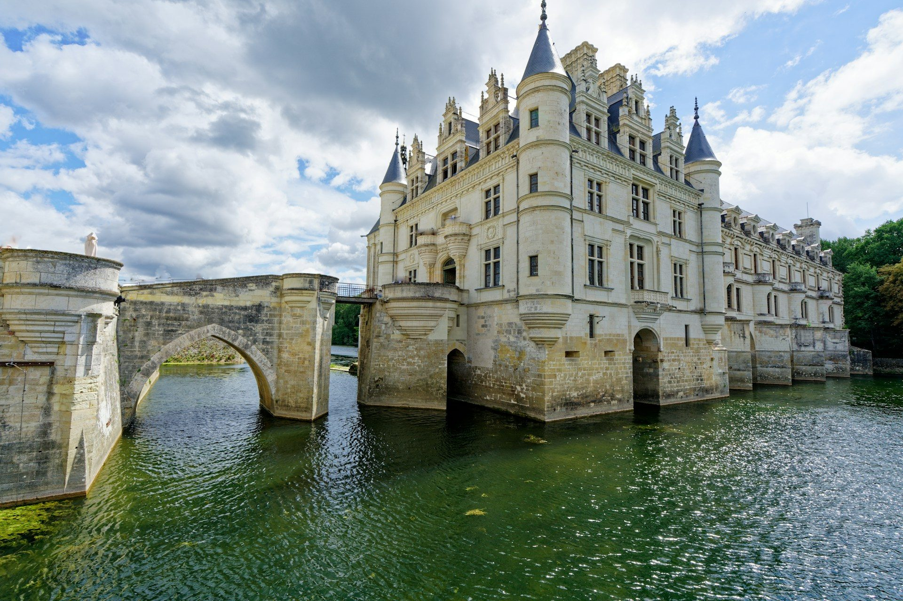
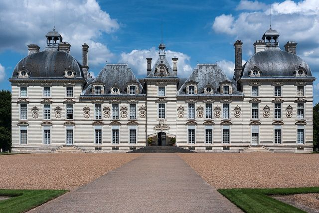

Visiter les châteaux de la Loire
Chambord, Chenonceau, Amboise et Villandry : les grands châteaux de la Renaissance, à deux heures de Paris.
Photo : Colin Watts / Unsplash
La vallée de la Loire, inscrite au patrimoine mondial de l’Unesco, rassemble les plus beaux châteaux de la Renaissance : Chambord, le plus grand, Chenonceau bâti sur le Cher, Amboise et le Clos Lucé de Léonard de Vinci, Villandry et ses jardins. Tours, Amboise et Blois sont à 1 h à 2 h de Paris en train.
En hiver, la plupart des châteaux restent ouverts et se parent de décors de Noël de fin novembre à début janvier. Chaque guide donne les horaires, les prix 2026, l’accès et nos conseils.
Les châteaux de la Loire en un coup d’œil
| Château | Billet adulte 2026 | À ne pas manquer |
|---|---|---|
| Chambord | 21 € (résidents EEE), 31 € (autres) | L’escalier à double révolution, les terrasses |
| Chenonceau | 15 € (19 € avec audioguide) | La galerie au-dessus du Cher |
| Amboise | 17,50 € ; Clos Lucé 20 € | La tombe de Léonard de Vinci |
| Villandry | 14 € (jardins seuls 8,50 €) | Le potager décoratif |
| Chaumont-sur-Loire | Selon la saison | Noël « Rêves d’antan » jusqu’au 10 janvier 2027 |
| Cheverny | Selon la formule | Ouvert tous les jours, même le 25 décembre et le 1er janvier |
| Blois | Selon la formule | L’escalier de François Ier, le son et lumière |
Prix relevés sur les sites officiels pour 2026 ; chaque guide détaille les tarifs réduits et les horaires.
Combien de jours prévoir ?
En une journée depuis Paris, le plus simple est de choisir un secteur : Amboise et Chenonceau depuis Tours, ou Chambord, Blois et Cheverny autour de Blois. Avec deux ou trois jours, on enchaîne les deux secteurs et on ajoute Villandry. Amboise est à environ 2 h de Paris en train, et la gare de Chenonceaux est à quelques minutes à pied du château ; pour Chambord, il faut une voiture ou la navette depuis Blois.
Que voir dans la vallée de la Loire
-

Le plus grand château de la Loire, son escalier à double révolution et ses terrasses.
-

Le château bâti en arches sur le Cher, sa grande galerie et les jardins de Diane.
-

Le château royal où repose Léonard de Vinci et le Clos Lucé, sa dernière demeure.
-

Les plus beaux jardins de la Loire : potager décoratif, buis taillés et labyrinthe.
-

Quatre siècles d’architecture autour d’une cour, l’escalier de François Ier et le son et lumière.
-

Un château classique toujours habité, modèle du Moulinsart de Tintin.
-

Un château au-dessus de la Loire et le Festival international des jardins.